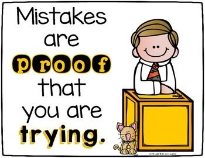

A life of making mistakes
By George Bernard Shaw
“A life spent making mistakes
is not only more honorable,
but more useful than
a life spent doing nothing.” — George Bernhard Shaw
Definitions of "Turn"
-
move in a circular direction wholly or partly around an axis or point.
-
an act of moving something in a circular direction around an axis or
point.
- a change of direction when moving.
